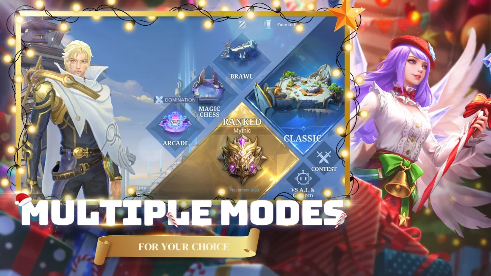
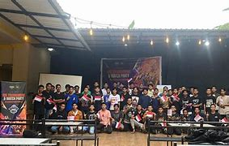

About Mobile Legends
Mobile Legends: Bang Bang (MLBB) is a popular multiplayer online battle arena (MOBA) game developed and published by Moonton. Since its release in 2016, it has become one of the most played mobile games globally, particularly thriving in Southeast Asia and other regions where mobile gaming dominates.
Gameplay Overview:
- Objective: Two teams of five players each compete to destroy the opposing team’s base while defending their own. Victory requires teamwork, strategy, and hero mastery.
- Map: The classic MLBB map features three lanes (top, mid, and bottom), a jungle with buffs, turrets for defense, and a nexus (base core).
- Heroes: Players select from over 100 heroes across six classes (Tank, Fighter, Assassin, Marksman, Mage, and Support), each with unique abilities and roles in the team.
Key Features:
- Fast-Paced Matches:
- Hero Customization:
- Esports Integration:
- Accessibility:
● MLBB offers quick and intense matches lasting around 10–15 minutes, perfect for mobile gaming.
● Players can use emblems, builds, and skins to personalize their gameplay experience.
MLBB has a thriving esports ecosystem, including national leagues like MPL (Mobile Legends: Professional League) and international tournaments like the M-Series World Championships.
Designed for mobile platforms, MLBB features intuitive controls with a virtual joystick and skill buttons optimized for touch screens.
Game Modes:
- Classic Mode:
The standard MOBA format for casual gameplay. - Ranked Mode:
Competitive matches where players climb ranks from Warrior to Mythical immortal. - Brawl Mode:
A simplified version of the game featuring a single lane and random hero selection. - Arcade Modes:
Rotating special modes, including Chess-TD, Magic Chess, and more. - Custom Mode:
Play with friends with personalized match settings.

Community and Popularity:
● MLBB has cultivated a massive player base, especially in countries like Indonesia, the Philippines, and Malaysia.
● It has also gained international recognition through partnerships and collaborations with pop culture franchises.
● Regular updates, hero balance changes, and special events ensure the game remains fresh and engaging for players.
